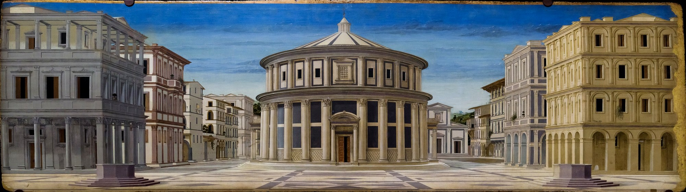
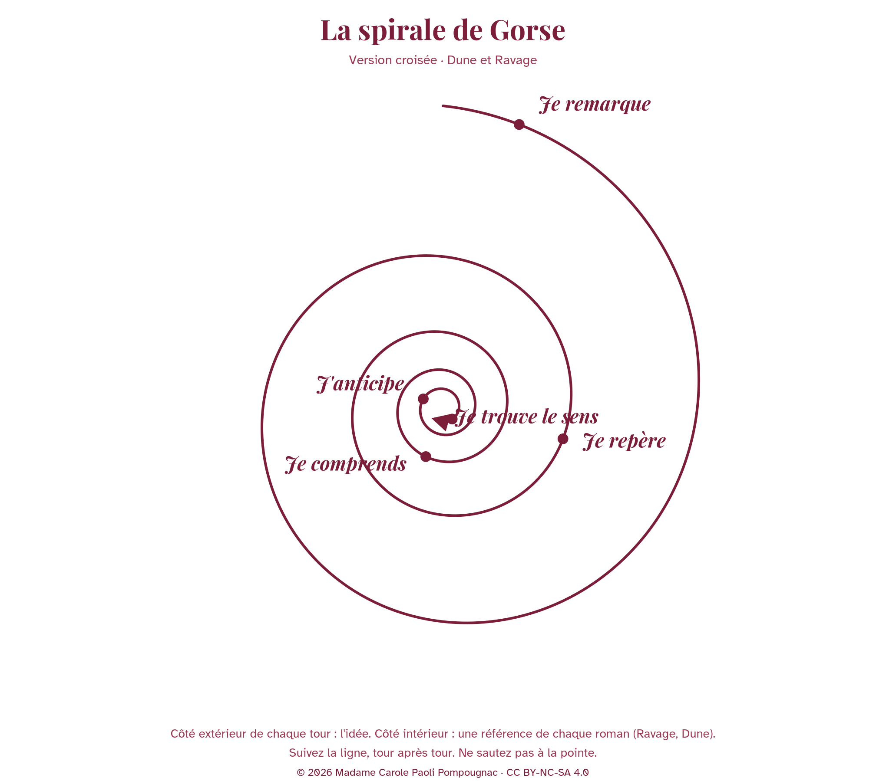

Français · Première · lycée général et technologique · littérature comparée
Celui qui sauve, celui qui règne
Dune et Ravage : la dystopie a-t-elle une origine, ou est-elle devenue un genre ?

Pourquoi cette séquence ?
Après l'étude de Dune et celle de Ravage, cette séquence croisée prend un risque assumé : elle intègre au parcours une question de littérature comparée, qui dépasse les deux romans sans les quitter. La question directrice n'est pas un ornement : elle organise les huit séances.
Question directrice. La dystopie a-t-elle une origine, ou est-elle devenue un genre, voire un sous-genre littéraire ?
Problématique comparative. Quand un monde perd ce dont il dépend, celui qui le sauve devient-il son maître ?
English strand. When a world loses what it lives on, does the one who saves it become its master?
On ne recommence pas les deux études. On les situe. On les classe. On observe comment chaque roman construit un monde, par son lexique, sa syntaxe et sa structure, et ce que ce monde fait du chef qui le sauve. Ravage célèbre presque sans réserve le patriarche ; Dune avertit contre son héros, à l'intérieur même du récit, notamment par la parole de Kynes : aucun désastre n'est plus terrible, pour un peuple, que de tomber entre les mains d'un Héros. Cette comparaison, tenue jusqu'à l'oral, prépare la seconde partie de l'épreuve : l'élève présente Ravage ; Dune nourrit les raisons et l'entretien.
Fiche d'identité
| Titre | Celui qui sauve, celui qui règne |
|---|---|
| Œuvres | Frank Herbert, Dune (1965) et René Barjavel, Ravage (1943). Les deux textes restent protégés : citations courtes seulement ; traductions de travail pour Dune. |
| Niveau | Première technologique · lycée général et technologique |
| Objet d'étude | Le roman et le récit du Moyen Âge au XXIe siècle |
| Parcours | Fins du monde et recommencements : le roman face au progrès |
| Durée | Huit séances de 55 minutes, menées jusqu'à 52 minutes, avec un point d'arrêt et une issue de secours de huit minutes. |
| Fil anglais | Chaque séance comprend un temps en anglais (compréhension, expression orale, médiation). Les passages de Dune sont lus dans le texte. La co-intervention avec le professeur d'anglais est un choix d'établissement, non une prescription officielle. |
| Évaluations | Exercices à chaque séance ; évaluation sommative écrite sur 20, avec grille, séance 7 ; présentation orale comparative sur 20, séance 8. |
Cadre officiel
Programme de français de Première, arrêté du 17 janvier 2019, Bulletin officiel spécial n° 1 du 22 janvier 2019. Liste des œuvres, Bulletin officiel n° 30 du 24 juillet 2025, NOR MENE2518792N. Note de service sur les épreuves, 11 septembre 2026, NOR MENE2622658N, Bulletin officiel spécial n° 4 du 17 septembre 2026. Ravage, hors programme national, est proposé en lecture cursive pour la seconde partie de l'oral. L'élève peut choisir de le présenter ; il présente une œuvre, non les deux.
Programme d'anglais, arrêté du 5 mai 2025, Bulletin officiel n° 22 du 29 mai 2025, NOR MENE2504621A, annexe 4. En Première, le niveau visé est B1 pour la langue vivante B, B1+ pour la langue vivante A. Le fil anglais de cette séquence s'articule, si l'équipe le souhaite, aux axes culturels qui portent sur l'art et le pouvoir, sur la représentation de la nature, et sur les innovations et les bouleversements.
Les finalités du programme, et les cinq pôles de travail
Le programme n'énonce pas « cinq directives ». Il énonce six finalités propres de l'enseignement du français au lycée (programme de Première, publié sur Éduscol) : améliorer les capacités d'expression et de compréhension, par un enseignement continué de la langue et par la pratique fréquente de la lecture, de l'écriture et de l'oral ; faire lire les élèves et leur permettre de comprendre et d'apprécier les œuvres, afin de construire une culture littéraire commune, ouverte sur les autres arts, les savoirs et la société ; structurer cette culture en faisant droit à la sensibilité et à la créativité, et en faisant toute sa place à la dimension historique ; former le sens esthétique et cultiver le goût, en renforçant les capacités d'analyse et d'interprétation ; approfondir le jugement et l'esprit critique, à l'écrit comme à l'oral ; amener les élèves à une attitude autonome et responsable, notamment en matière de recherche d'information. Le préambule précise que les principaux objectifs sont de faire réfléchir, lire, écrire et parler les élèves.
Pour le travail de la classe, ces six finalités sont ici groupées en cinq pôles pédagogiques, sans se substituer au texte officiel :
- Lire et construire une culture. Situer Dune et Ravage dans une histoire, de l'utopie de More aux récits d'anticipation du XXe siècle, et s'approprier d'autres œuvres pour les classer.
- La langue, le lexique, la syntaxe. Observer les mots inventés, les phrases de l'ordre et celles de la catastrophe, et la structure de chaque roman.
- Analyser et interpréter. Repérer les marques de la dystopie, et les lieux où chaque roman résiste à l'étiquette.
- Écrire et juger. Exercices à chaque séance ; évaluation sommative écrite sur 20, avec grille.
- Parler, écouter, devenir autonome. Présentation orale comparative, qui prépare l'épreuve.
Le fil anglais travaille les cinq activités langagières du programme : réception écrite et orale, production écrite et orale, et médiation.
Fil conducteur
La dépendance change de forme. Elle porte d'abord sur une ressource (l'épice, l'électricité, la machine). Elle porte ensuite sur celui qui la contrôle. Elle porte enfin sur le récit qui justifie le chef. En suivant ce fil, de l'origine de la dystopie jusqu'à la pointe de la spirale, on peut répondre aux deux questions : d'où vient ce genre, s'il en est un ; et que devient un sauveur, quand un monde a perdu ce dont il dépend.
Les huit séances
| Séance | Titre | Tour de la spirale | Question |
|---|---|---|---|
| Séance 1 | L'origine de la dystopie | Je remarque | La dystopie a-t-elle une origine, ou est-elle devenue un genre, voire un sous-genre littéraire ? |
| Séance 2 | S'approprier d'autres œuvres | Je remarque, Je repère | Où classer Dune et Ravage, parmi d'autres récits d'anticipation et de dystopie ? |
| Séance 3 | Les marques de la dystopie | Je repère | Quelles marques de la dystopie se retrouvent, ou se refusent, dans Dune et dans Ravage ? |
| Séance 4 | Le lexique et la syntaxe | Je comprends | Comment le lexique inventé et la syntaxe de l'ordre, ou de la catastrophe, font-ils un monde ? |
| Séance 5 | L'exploration de l'imaginaire | Je comprends, J'anticipe | Que découvre-t-on, dans chaque roman, quand on explore un monde inventé ? |
| Séance 6 | Rationaliser l'imaginaire | J'anticipe | Par quels moyens, syntaxiques, lexicaux et structurels, chaque roman pose-t-il les bases d'un nouveau monde ? |
| Séance 7 | Celui qui sauve, celui qui règne | Je trouve le sens | Quand un monde perd ce dont il dépend, celui qui le sauve devient-il son maître ? |
| Séance 8 | L'oral comparatif | la pointe | Quelle question défendez-vous, à la pointe de la spirale, en présentant Ravage à la lumière de Dune ? |
- Séance 1. L'origine de la dystopie · Je remarque.
- Séance 2. S'approprier d'autres œuvres · Je remarque, Je repère.
- Séance 3. Les marques de la dystopie · Je repère.
- Séance 4. Le lexique et la syntaxe · Je comprends.
- Séance 5. L'exploration de l'imaginaire · Je comprends, J'anticipe.
- Séance 6. Rationaliser l'imaginaire · J'anticipe.
- Séance 7. Celui qui sauve, celui qui règne · Je trouve le sens.
- Séance 8. L'oral comparatif · la pointe.
La spirale de Gorse
La spirale de Gorse est la méthode de Madame Carole Paoli Pompougnac. Le nom honore la grand-mère de son mari. Dans cette version croisée, le côté extérieur de chaque tour porte l'idée comparative ; le côté intérieur porte une référence de chaque roman, Ravage et Dune. Les cinq tours portent les libellés exacts : Je remarque, Je repère, Je comprends, J'anticipe, Je trouve le sens. La pointe formule la question que l'élève défendra à l'oral.

Les évaluations
Chaque séance comprend au moins un exercice, avec un corrigé que l'on peut afficher ou masquer. Deux évaluations sommatives ferment la séquence :
- Séance 7. Évaluation sommative écrite, essai comparatif, sur 20, avec grille de correction. La question est celle de la problématique comparative.
- Séance 8. Présentation orale, sur 20. L'élève présente Ravage comme lecture cursive (trois à quatre minutes, puis quatre à cinq minutes d'entretien). La comparaison avec Dune nourrit les raisons du choix et l'entretien. Barème : 4 + 4 + 4 + 5 + 3.
S'approprier d'autres œuvres
La séance 2 est entièrement consacrée à cette appropriation. On lit de courts extraits, dans le domaine public, de Thomas More, de Swift, de Zamiatine (Nous) et d'Orwell (Nineteen Eighty-Four, dans le domaine public en France depuis le 1er janvier 2021). Pour Huxley, Bradbury et Atwood, dont les textes restent protégés, on s'en tient au titre, à la date, à une phrase de situation, sans reproduction de couverture protégée et sans citation étendue. Le but est de classer Dune et Ravage : origine, genre, ou sous-genre.
Le fil anglais
Chaque séance réserve un moment à la langue de Herbert. On lit de courts passages de Dune en anglais, on en propose une médiation en français, on s'exerce à formuler la problématique : When a world loses what it lives on, does the one who saves it become its master?. Le vocabulaire bilingue (spice, desert power, the hero, the chief, new world) est installé progressivement. La co-intervention demeure un choix local.
Histoire des arts
Les illustrations sont des œuvres du domaine public, jamais déjà utilisées sur le site, et jamais reprises d'une séance à l'autre ni de la couverture aux séances. La Cité idéale d'Urbino, choisie pour la couverture, ouvre la question de l'utopie comme origine possible de la dystopie. Holbein, Grandville, Lorenzetti, Goya, Friedrich, Bruegel, Piranesi, Blake, John Martin, Cole, Boullée et Schinkel accompagnent les séances.
Vocabulaire à installer
Utopie, dystopie, anticipation, contre-utopie, sous-genre, néologisme, glossaire, épigraphe, appendice, structure, lexique, syntaxe, ressource, chef, patriarche, récit légendaire, rationaliser, nouveau monde. En anglais : utopia, dystopia, spice, desert power, hero, saviour, master, new world, glossary, epigraph.
Citations à retenir
Les citations sont courtes, à vérifier dans l'édition de la classe. Les traductions de Dune sont des traductions de travail.
- Kynes, dans Dune : « No more terrible disaster could befall your people than for them to fall into the hands of a Hero. » Traduction de travail : nul désastre n'est plus terrible, pour un peuple, que de tomber entre les mains d'un Héros.
- Paul Atréides, dans Dune : « He who can destroy a thing, has the real control of it. » Traduction de travail : celui qui peut détruire une chose en a le véritable contrôle.
- Barjavel, Ravage, ouverture des « Temps nouveaux » : la civilisation de 2052, suspendue à la machine. À citer d'après l'édition de la classe.
- Barjavel, Ravage, quatrième partie, « Le patriarche » : l'autorité de François devenue inquestionnable. À citer d'après l'édition de la classe.
Bilan
Au terme des huit séances, l'élève doit pouvoir : définir utopie, dystopie et anticipation, et dater quelques jalons (More, 1516 ; Swift, 1726 ; le mot « dystopia » chez Mill, 1868) ; situer Dune et Ravage parmi d'autres œuvres, sans forcer l'étiquette ; nommer les marques de la dystopie, et les résistances de chaque roman ; analyser lexique, syntaxe et structure comme moyens de bâtir un monde ; répondre, à l'écrit et à l'oral, aux deux questions de la séquence.
Fiche de lecture
Une fiche de lecture, associée à Dune et à Ravage, sera jointe ici dès que le modèle de Madame Carole Paoli Pompougnac sera disponible.
Téléchargements
Tous les documents sont proposés en pdf, en docx et en odt.
- Séquence complète : pdf · docx · odt
- Guide du professeur : pdf · docx · odt
- Livret élève : pdf · docx · odt
- Version dys : pdf · docx · odt
- Corrigés : pdf · docx · odt
- Spirale de Gorse, feuille vierge : pdf · docx · odt
conçu par Madame Carole Paoli Pompougnac, mis en page par Grok
Bibliographie et crédits
- Thomas More, Utopia, Louvain, 1516 (texte latin) ; première traduction anglaise, 1551.
- Jonathan Swift, Gulliver's Travels, 1726.
- John Stuart Mill, discours à la Chambre des communes, 12 mars 1868, où le mot anglais « dystopia » est attesté.
- Eugène Zamiatine, Мы (Nous), écrit en 1920-1921, première publication anglaise (We), 1924. Dans le domaine public en France.
- Aldous Huxley, Brave New World, 1932. Texte protégé : titre et situation seulement.
- George Orwell, Nineteen Eighty-Four, 1949. Dans le domaine public en France depuis le 1er janvier 2021. Une séquence d'anglais de Terminale, déjà publiée sur ce site, est citée par son titre seulement.
- Ray Bradbury, Fahrenheit 451, 1953. Texte protégé.
- Margaret Atwood, The Handmaid's Tale, 1985. Texte protégé.
- René Barjavel, Ravage, Denoël, 1943. Texte protégé (l'auteur est mort en 1985).
- Frank Herbert, Dune, Chilton Books, 1965. Texte protégé (l'auteur est mort en 1986).
Couverture : Vue d'une cité idéale, dite La Cité idéale d'Urbino, vers 1480-1490, huile sur bois, Galleria Nazionale delle Marche, Urbino. Domaine public, via Wikimedia Commons. Les crédits de chaque illustration figurent sous l'image, et sur la page des sources.